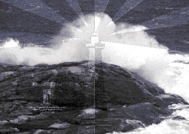

KredittBanken ble etablert som lokalbank for Nordvestlandet 4. januar 1993. I dag har banken en forvaltningskapital på 534,6 millioner kroner, og kan vise til svært gode resultater. KredittBanken har et fyrtårn i sin logo. Bildet viser logoen manipulert inn i sitt rette element som omslag på årsberetningen for 1994. I&M Ramstad. Sollid er bankens byråforbindelse, og produserer også informasjonsmagasinet "Stø Kurs".